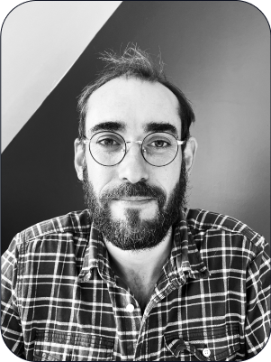

À Nantes


L’étiomédecine est une méthode d’accompagnement qui permet de se libérer de blocages qui entravent notre bien-être physique et émotionnel ainsi que notre évolution personnelle. C’est une approche qui prend en considération l’être humain dans sa globalité physique et affective. Le traitement passe essentiellement par le fait d’aider le patient à recontacter des ressentis physiques et émotionnels en lien avec des évènements ou des conditionnements, et à libérer les mémoires concernées. Le praticien s’aide notamment des réactions du pouls du patient pour le guider pendant le soin. Le partage du ressenti, rendu possible par la présence affective et empathique du thérapeute, libère la charge de souffrance permettant alors aux symptômes et aux fonctionnements qui en découlaient de se dissiper. Toutefois, s’il ne s’agit pas de s’expliquer les souffrances, la capacité du patient à partager son ressenti est une condition sine qua none à la réussite du soin. Ce à quoi on résiste persiste ! En gagnant de la justesse dans la gestion des évènements, le patient retrouve petit à petit des libertés dans son corps, dans sa façon d’être et dans son regard sur le monde. Les motifs de consultations sont larges, en somme, tout ce qui peut toucher à la sphère psycho affective et à ses manifestations dans le corps. Le soin n'est pas une technique que l'on dispense (comme une recette que l'on applique à tout le monde) mais un accueil et un respect de ce que chaque patient ressent dans sa singularité. Nous sentir reconnus nous permet de nous libérer, profondément et durablement.
Je suis depuis tout petit fasciné par l’Homme et le vivant. Souhaitant être au coeur de cette expérience j’ai alors étudié l'ostéopathie, j’avais besoin de sentir toutes ces choses sous mes mains. Pourtant et avant la fin de mes études j’étais insatisfait par les concepts mécanistes qui nous étaient enseignés. L’Homme y était abordé uniquement d’un point de vue anatomique et structurel. Idée à laquelle je ne pouvais me résoudre. Une fois le diplôme obtenu j’ai suivi mon ressenti et suis parti explorer de nouveaux horizons. J’ai alors exploré plusieurs champs de pratique ostéopathique en suivant les enseignements en biodynamique de Bruno Josse, l’approche tissulaire de Pierre Tricot ainsi que les admirables cours de physiologie évolutionniste de Max Girardin. Ces formations m’ont appris à travailler avec plus de globalité et m’ont également permis d’accéder aux savoirs fondateurs de l’ostéopathie. J’entendais enfin parler de cette force de vie qui anime notre matière et nous permet de nous maintenir en état de santé.
Ces nouvelles perspectives venaient confirmer mes premières intuitions et m’indiquaient que j’étais sur le bon chemin. Ma pratique évoluant, je commençais à procurer des soins de plus en plus profonds et j’en fus un temps satisfait. Mais au bout de plusieurs mois je constatais au travers de nombreux soins que mes résultats étaient limités. En effet et malgré une amélioration initiale, les symptômes des patients finissaient par revenir dans le temps. Malgré toute ma bonne volonté je n'arrivais pas à procurer un bien être durable, comme s’il me manquait une clef pour aller plus profondément dans le soin. La rigueur m'incitait à aller voir plus loin. Je saisissais au fil du temps l’impact des blocages affectifs sur le bien-être psychique et corporel des patients et en regardant ma boîte à outils je me trouvais encore bien démuni pour accompagner ces personnes. Plus j’avançais et plus j’étais convaincu qu’il fallait toucher le lien qui unit le corps et l’esprit pour aider les patients à retrouver un bien être profond et durable. C’est en poursuivant mon exploration que j’ai découvert l’étiomédecine en tant que patient. Ce fut une vraie révélation, je me sentais compris. À travers ces soins j’ai eu la sensation d’être accueilli dans mon entièreté, tant physique qu’affective. Je comprenais à quel point nos mémoires de souffrances pouvaient être la source de nos maux. Cette approche me permit de me libérer de vieux schémas qui freinaient considérablement mon corps et mon évolution. Tout s'éclairait pour moi ! J'ai alors décidé de redonner ce qui m'avait moi-même aidé et me suis ainsi formé à cette approche en 2009 auprès de Max Bernardeau. Je l’accompagne aujourd’hui dans la formation de nouveaux praticiens. Aujourd'hui, c'est avec cet unique outil que j'ai choisi d'accompagner les patients au quotidien avec pour humble espoir de partager ce qui m'a moi même aidé.
DIPLOMÉ OSTÉOPATHE DO en 2008
à IDHEO NANTES
OSTÉOPATHIE BIODYNAMIQUE en 2008
avec B. JOSSE
OSTÉOPATHIE TISSULAIRE en 2012
avec P. TRICOT
PHYSIOLOGIE ÉVOLUTIONNISTE en 2012
avec M. GIRARDIN
ÉTIOMÉDECINE en 2009
avec M. BERNARDEAU
davidjegou.etio@gmail.com
Tarif des consultations : 70 €.
Site de Max Bernardeau, praticien à Paris et avec qui j’ai effectué ma formation.
Site de référence sur l’étiomédecine.
Site de Marie Da-dalt, praticienne à Toulouse.
Site d’Oriane Gagnieu, praticienne à Bordeaux.
Site de Camille Ziane, praticienne à Marseille.